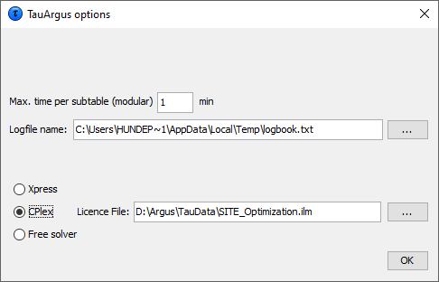
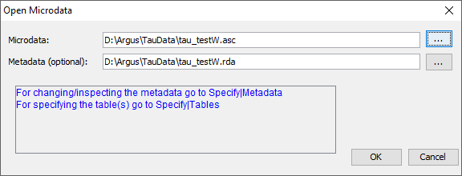
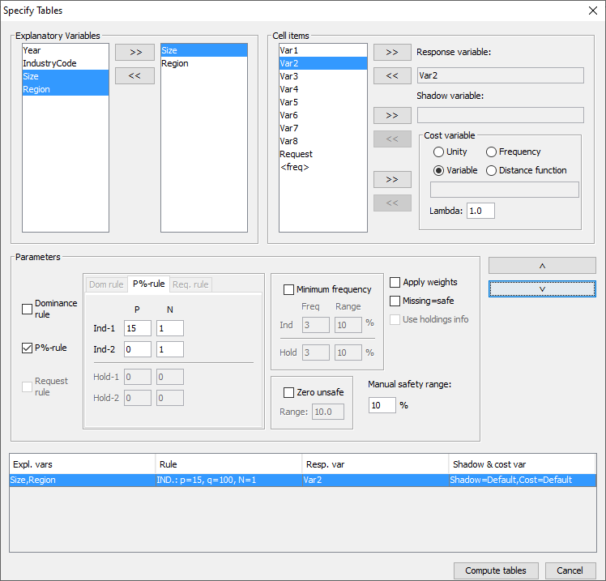
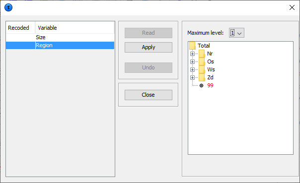
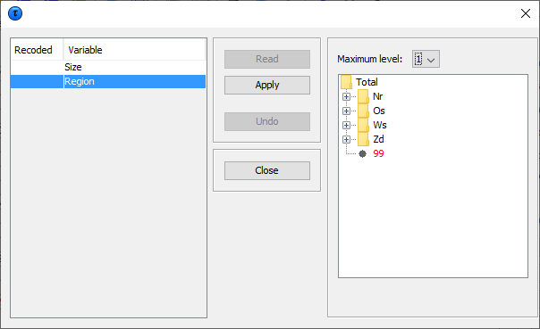
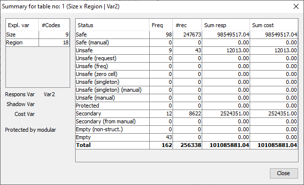

4 03_A_tour_of_τ-ARGUS
4.1 Preparation
First steps. Before using τ‑argus for the first time, some options > should be set to make τ‑argus better usable in your environment. > E.g. you can select the solver you want to use in secondary cell > suppression. See section [3.1.1]
Open Microdata. This involves selecting both the microdata and the > associated metadata. See section [3.1.2]
Specify Metafile. This shows how the metafile can be entered when > there in no metafile available, or can be edited after being read > in but before any tables are being specified. This includes > options such as declaring variables to be explanatory or response, > and setting up the hierarchical structure of the data and the > location of the variables in the file. See section > [3.1.3]
Specify Tables. Declare the tables for which protection is > required, along with the safety rule and minimum frequency rule on > which the primary suppressions will be based. When this has been > finished the tables will be computed or read in. See section > [3.1.4]
Process of Disclosure Control. The main window of τ‑argus will > show the table that we have computed or read in and when all the > safety rules for primary suppressions have been applied.
You can inspect the table; get information about the number of > unsafe cells etc. It contains options to modify the table using > global recoding. There are several options to make the table safe > via secondary cell suppression and rounding. Also an audit > procedure is available to check quality of any secondary > suppression pattern. See section [3.2]
Save Table. The user can save the ‘safe’ table in a number of > formats as will be seen in section [3.3]. >
4.1.1 First steps
Via (Help|Options) you can open the options window. Before starting the process of protecting a table, you can customiseτ-argus. Some methods for secondary suppression (the modular and theoptimal), but also the audit procedure require an external linearprogramming solver. For the complex problems of τ-argus we haveconcluded that the use of high quality commercial solvers can beefficient. However also a free solver can be chosen as a goodalternative. Although τ-argus is freeware software these solvers arecommercial packages and you have to acquire a licence for themseparately. More information can be found on the casc-website(https://research.cbs.nl/casc/) Thechoice of this solver must be made before protecting a table. Thechoices are either Xpress or cplex or the free solver soplex, thedifferent LP_solvers supported by τ-argus. See also section[2.9] for more details. For cplex the name of the licence file mustspecified. Once this window has been opened details of the solver can be entered.Also the maximum time the solver is allowed to spend on each sub-tablein Modular can be specified. However always a feasible solution issought. And the name of the logbook, by default taulogbook.txt in thetemp-directory can be chosen.
4.1.2 Open a microdata file
In this tour we only deal with how to open a fixed format microdatafile (see sections [3.1.2] to [3.1.4]). If analready constructed table is to be used, then go to the Referencechapter (section [4.3.2]). To start disclosure controlwith τ-argus there are three possible options:
Open a ascii microdata file from which a table can be constructed,
Open an already completed table,
Open a SPSS systemfile containing the microdata Opening an already completed table is not part of this tour. Seesection [4.3.2], Also the SPSS-option (see section[4.3.1]) is not part of this tour, Both a microdata file and the metadata file describing this microdatafile are required. The microdata file must be either a fixed formatascii file or a free format file with a specified separator. Byclicking (File|Open Microdata) you can specify both the name of themicrodata file and the name of the file containing the metadata.  τ-argus, expects the microdata and metadata file to be stored inseparate files. The simplest way to use the program is to use theextension .ASC for the (fixed format) datafile and .RDA (RecordDescription for Argus) for the metadata file. If the name of themetadata file is the same as the datafile, except for the extension,and it already exists in the same directory, τ-argus will fill in thename of this metadata file automatically in the second textbox. If nometadata file is specified, the program has the facility to specifythe metadata interactively via the menu option (Specify|Metafile).This is also the place to make changes to the metadata file. Insubsection [3.1.3] we will give a description of themetadata file for τ-argus.
4.1.3 Specify metafile
When you enter or change the metadata file interactively using τ-argusthe option (Specify|Metafile) will bring you to the following screen:  The key elements of this window are the definitions for each variable.Most variables will be defined as one of the following.
The key elements of this window are the definitions for each variable.Most variables will be defined as one of the following.
Explanatory Variable: a variable to be used as a categorical > (spanning) variable when defining a table.
Response Variable: a numerical variable to be used as a cell item in > a table.
Weight variable: a variable containing the sampling weighting > scheme. More details on these variables along with the others options can befound in the Reference chapter (subsection [4.4.1]). Other important features of this window are as follows.
Codelist: τ-argus will always automatically build the codelists for > the explanatory variables from the datafile. However you can > enhance the presentation of the information if you can specify a > codelist file (a list-of-codes of the explanatory variables) as > follows.
Automatic: The codelist is created from the categories in the > variable.
Codelist file: The codes can be read in from an external file. > Each category can contain a label. The codelist is only used > for enhancing the presentation but always τ-argus will build a > codelist from the datafile itself.
Missing values: this gives information on the missing values which > are attached to a codelist. Two distinct missing value indicators > can be set (the reason for this is for the purposes of indicating > different reasons for missing values: for example perhaps > non-responses of different forms: maybe one code for the response > ‘don't know’, and another for’refusal’). Missing values > however are not required.
Hierarchical codes: The hierarchy can be derived from
the digits of the individual codes in the data file or
a specified file containing the hierarchical structure. See > section [5.2] Examples are shown in the metafile information below. The Metafile The metafile describes the variables in the microdata file, both therecord layout and some additional information necessary to perform theSDC-process. Each variable is specified on one main line, followed byone or more option lines. The options ine always start with an optionname enclosed in "<" and ">".An example is shown here. Theleading spaces shown only serve only to make the file more readable;they have no other meaning. Year 1 2 " x" <RECODEABLE> <TOTCODE> "Total" IndustryCode 4 5 "99999" <RECODEABLE> <TOTCODE> "Total" <DISTANCE> 1 3 5 7 9 <HIERARCHICAL> <HIERLEVELS> 3 1 1 Size 9 2 "99" <RECODEABLE> <TOTCODE> "Alles" Region 12 2 <RECODEABLE> <TOTCODE> "Total" <DISTANCE> 2 4 4 4 4 <CODELIST> "REGION.CDL" <HIERARCHICAL> <HIERCODELIST> "D:\TauJava3\Datata\region2.hrc" <HIERLEADSTRING> "@" Wgt 15 4 <WEIGHT> <DECIMALS> 1 Var1 19 9 <NUMERIC> Var2 28 10 <NUMERIC> <DECIMALS> 2 Var3 38 10 <NUMERIC> Var4 48 10 <NUMERIC> Var5 58 10 <NUMERIC> Var6 68 10 <NUMERIC> Var7 78 10 <NUMERIC> Var8 88 10 <NUMERIC> Request 99 1 <NUMERIC> Details of the variables ‘Year’ : For this variable begins on position 1 of each record , is2 characters long and missing values are represented by 99. It is alsorecodeable implicitly stating that it is an explanatory or spanningvariable used to create the tables. ‘IndustryCode’: For this variable begins on position 4 of eachrecord and is 5 characters long. Missing values are represented by99999. As well as being recodeable this variable is hierarchical andthe hierarchy structure is specified. The first 3 characters are inthe top hierarchy level, the 4th character in the second level andthe 5th character in the lowest level. ‘Size’: For this variable begins on position 9 of each record and is2 characters long, and missing values are represented by 99. It isalso recodeable. ‘Region’: For this variable begins on position 12 of each record andis 2 characters long. There is no missing value. There is a codelistfile region.cdl and of a hierarchical codelist file region2.hrc.Examples of these files are shown here. Note: the codelist file is not essential; the content is only usedto enhance some information on the screen. The hierarchicalinformation however plays an essential role as it describes thestructure of the table and the relation between the cells. Note: In both files the code for Total is not specified. τ-argusalways explicitly assumes that there will be a total in each dimensionof the table. Without totals there are no additivity constrains andhence there is no problem of Secondary Cell Suppression. The file region.cdl: 1,Groningen 2,Friesland 3,Drenthe 4,Overijssel 5,Flevoland 6,Gelderland 7,Utrecht 8,Noord-Holland 9,Zuid-Holland 10,Zeeland 11,Noord-Brabant 12,Limburg Nr,North Os,East Ws,West Zd,South The file region.hrc: Nr @ 1 @ 2 @ 3 Os @ 4 @ 5 @ 6 @ 7 Ws @ 8 @ 9 @10 Zd @11 @12 Additional details of these coding files can be found in the sections[5.3] and [5.2].
4.1.4 Specify tables
When the metadata file is ready, the tables to be protected can bespecified. This is achieved via Specify|Tables. A window to specifythe tables is presented. In the example here we have a 2 dimensionaltable (2 explanatory variables; Size x Region) and a response variable(Var2). A safety rule (p%-rule) has been defined.  The key elements of this window are as follows. Explanatory variables On the left is the listbox with the explanatory variables. Click on ‘>>’ moves the selected variables to the next box in whichthe selected explanatory variables can be seen. From the box on theleft hand side, containing explanatory variables, the variables thatwill be used in the row or the column of the table, in a 2-way tablecan be selected. Up to six explanatory variables can be selected tocreate a table, but higher dimensions will restrict the options toprocess a table. Cell items The ‘cell items’ box contains the variables, which were declared as’response variables’ in the metafile. By using the ‘>>’ button theycan be moved to the ‘response variable’ box to be used in the definedtable. Response variable Any variable in the cell items box can be chosen as the responsevariable. Also the implicit variable <freq> for making a frequencytable. Shadow variable The shadow variable is the variable which is used to apply the safetyrule. By default this is the response variable. More details on theShadow variable can be found in section [4.4.4] in theReference chapter. Cost variable This variable describes the cost of each cell. These are the coststhat are minimised when the pattern of secondary suppressed cells arecalculated (see section [2.6] in the Theory chapter forthe further details). By default this is the response variable butother choices are possible. If the response or any other explicitlyspecified variable is used for this purpose, the radio button'variable' should be selected. Then, any variable name can betransferred from the cell items to the cost variable window. Howeverif the name is empty by default the response variable will be chosen.It is also possible to use the frequency of the cells as acost-function. This will suppress cells minimising the number ofcontributors to each cell. A third option is that the number of cellsto be suppressed is minimised, irrespective of the size of theircontributions (unity option – cost variable is set to 1 for eachcell). However this tends to the suppression of totals and marginals.Also a distance function is available. More details will be given inthe Reference Chapter along with an example (section[4.4.4]). Note that choice of the cost variable does nothave any impact when using the hypercube method for secondarysuppression. Weight If the data file has a sample weight, specified in the metadata file,the table can be computed taking this weight into account. In thiscase, the 'apply weights' box should be ticked. More details will begiven in the Reference Chapter along with an example (section[4.4.4]). The safety rule The concept of safety rules is explained in section [2.2]in the chapter on Theory. In this window the left side of the windowallows the type of rule to be selected, this is usually either thedominance rule or p% rule, along with the necessary parameter values.Several rules together can be set for any particular table. Additionally, the minimum number of contributors (threshold rule) canbe chosen. In the window this is referred to as the ‘MinimumFrequency’ Now for the readability of this chapter, brief summaries are providedof the Dominance and p% rules. Dominance rule This is sometimes referred to as the (n,k) rule. The rule states thatif the sum of contributions of the largest n contributors to a cell ismore than k%, the cell is considered disclosive. This is the traditional rule; however we recommend to use the p% ruleas a better alternative. The p%-rule focusses more on the individualcontributors to a cell. p% rule The p% rule says that if the value of a cell x1 can be estimatedto an accuracy of better than p% of the true value then it isdisclosive where x1 is the largest contributor to a cell. This rule can be written as: \[{{\sum\limits_{\mathit{ii} = 3}^{c}x_{i}} \geq \frac{p}{100}}x_{1}\]for the cell to be non-disclosive where c is the total number ofcontributors to the cell and the intruder is a respondent in the cell. It is important to know that when entering this rule in τ-argus thevalue of n refers to the number of intruders in coalition (who wishto group together to estimate the largest contributor). In general n =1. A typical example would be that the sum of all reporting unitsexcluding the largest two must be at least 10% of the value of thelargest. Therefore, in τ-argus set p=10 and n =1 as there is just oneintruder in the coalition, respondent x2. Note: we only consider the situation for the largest contributor, asthis is the worst case. If the largest is safe all contributors aresafe. The choice of safety rule is specified by the user and the chosenparameters can then be entered. From these parameters symmetric safetyranges are computed automatically prior to the secondary suppressions. For the minimum frequency rule, a safety range is calculated from theuser given range. This is usually a small positive value and isrequired to enable secondary suppression to be carried out. A manual safety range is also required for cells that can be madeunsafe by intervention of the user. Other options such as the ‘Request Rule’ or the ‘Holding Rule’ will belooked at in more detail in the Reference chapter (section[4.4.4]). When everything has been filled in, click '˅' to transport all thespecified parameters describing the table to the ‘listwindow’ on thebottom. As many tables as you want may be specified, only limited bythe memory of the computer. If a table is to be modified press the’^’ button. Creating the Table Pressing the ‘Compute tables’ button will invoke τ-argus to actuallycompute the tables requested and the process to start disclosurecontrol may be invoked. τ-argus will come back showing the (first)table in a spreadsheet like view number of unsafe cells per variable,per dimension, as explained in the next section [3.2].
4.2 The process of disclosure control
When the table(s) have been calculated, the main-window of τ-arguswill show the (first) table.  Safe cells are shown in black, whilst cells failing the safety ruleand/or minimum frequency rule are displayed in red. Only the top2 levels of a hierarchy are shown initially. But at thebottom of the window there are options to open more levels. Alsoclicking on the '+'before a code will open a level of the hierarchy.In the example we have opened the 3rd level of the region variable. The user now has to decide whether to carry out secondary suppressionsimmediately or to perform some recoding first. There are other optionssuch as changing the status of individual cells manually, this will bediscussed further in the Reference chapter (see section[4.2]).
Safe cells are shown in black, whilst cells failing the safety ruleand/or minimum frequency rule are displayed in red. Only the top2 levels of a hierarchy are shown initially. But at thebottom of the window there are options to open more levels. Alsoclicking on the '+'before a code will open a level of the hierarchy.In the example we have opened the 3rd level of the region variable. The user now has to decide whether to carry out secondary suppressionsimmediately or to perform some recoding first. There are other optionssuch as changing the status of individual cells manually, this will bediscussed further in the Reference chapter (see section[4.2]).
4.2.0.1 Cell information
Cells can be selected in the table by clicking with the cursor on aspecific cell. In that case, information about the selected cell isshown on the right top part of the window. The status of the cell can be one of the following. Some of the termswill be explained later in this section but others are expanded uponin the Reference section [4.2].
Safe: Does not violate the safety rule
Safe (from manual): manually made safe during this session
Unsafe: According to the safety rule
Unsafe (request): Unsafe according to the Request rule.
Unsafe (frequency): Unsafe according to the minimum frequency rule.
Unsafe (zero cell) Unsafe because the zero-cells are considered > unsafe.
Unsafe (from manual): Manually made unsafe during this session.
Protected: Cannot be selected as a candidate for secondary cell > suppression.
Secondary: Cell selected for secondary suppression.
Secondary (from manual): Unsafe due to secondary suppression after > primary suppressions carried out manually.
Zero: Value is zero and cannot be suppressed.
Empty: No records contributed to this cell and the cell cannot be > suppressed. ****Change Status**** The second pane (‘Change Status’) on the right will allow the user tochange the cell–status.
Set to Safe: A cell, which has failed the safety rules, can be > declared safe by the user.
Set to Unsafe: A cell, which has passed the safety rules, can be > declared to be unsafe by the user.
Set to Protected: A safe cell is set so that it cannot be selected > for secondary suppression.
Set Cost: Change the value of the Cost-value for this cell
Use 'a priori' information (see below). A Priori Info This option is an a priori option to be mainly used for microdatawhich allows the user to feed τ-argus a list of cells where the statusof the standard rules can be overruled i.e. the status of the cells isalready specified. The associated file specifying this information isfree format. The format will be: Code of first spanning variable, Code of second spanning variable,Status of cell (u = unsafe, p = protected (not to be suppressed),s = safe). Also the cost-function can be changed here for a cell. This will makethe cell more likely to become secondary cell suppression, when thevalue is low or less likely when the value is high. Nr, 4, u Zd, 6, p 5, 5, c, 1 A full description of the aproiri file can be found in section[5.6]
4.2.0.2 Recode
The recode button will bring the user to the recoding system. Recodingis a very powerful method of protecting a table. Collapsed cellsusually have more contributors and therefore tend to be much safer. Hierarchical Recoding The first window shows the variables available for recoding In this example, the ‘Region’ variable has been selected for recoding.As ‘Region’ is a hierarchical variable, the codes are shown in ahierarchical tree. The user can either fold or unfold the branches byclicking on the ‘+’ or ‘-’ boxes which results in showing or omittingcodes from the table, or by choosing an overall maximum hierarchicallevel. (See the following windows for details). Pressing the ‘Apply’button followed by ’Close’ will actually apply the selected recodingand show the resulting table. Press the undo-button – it is nowpossible to go back to the original recoding scheme. Below this thereare two windows, one showing the recode window prior to applying therecoding for the hierarchical variable ‘Region’ and the second afterthe folding of the tree.  The next window shows the new hierarchical codes after collapsing allsecond level categories  By clicking 'Apply' and 'Close', we go back to the main windowwhich shows the table after recoding:
The next window shows the new hierarchical codes after collapsing allsecond level categories  By clicking 'Apply' and 'Close', we go back to the main windowwhich shows the table after recoding:  Non Hierarchical Recoding In this example the non-hierarchical ‘Size’ variable has been selectedto be recoded. The user can either write the required recodings in theedit box or import them from a previously written file. In the examplethe line 2:2-6 results that categories 2,3,4,5,and 6 will be recodedinto a new category 2. Note that τ‑argus will give a warning that somecodes have not been recoded. They will remain unchanged. The user willknow whether this is harmful or not.
Non Hierarchical Recoding In this example the non-hierarchical ‘Size’ variable has been selectedto be recoded. The user can either write the required recodings in theedit box or import them from a previously written file. In the examplethe line 2:2-6 results that categories 2,3,4,5,and 6 will be recodedinto a new category 2. Note that τ‑argus will give a warning that somecodes have not been recoded. They will remain unchanged. The user willknow whether this is harmful or not.  Once the recoding has been applied (both forhierarchical and non hierarchical data) the table can again bedisplayed. If there are now no cells, which fail the safety rules, thetable can be saved as a protected table. However, if there are still anumber of unsafe cells, secondary suppression needs to be carried out.This is necessary as the table is not yet safe. If only the cellsfailing the safety rules are suppressed, other cell values could beobtained by differencing.
Once the recoding has been applied (both forhierarchical and non hierarchical data) the table can again bedisplayed. If there are now no cells, which fail the safety rules, thetable can be saved as a protected table. However, if there are still anumber of unsafe cells, secondary suppression needs to be carried out.This is necessary as the table is not yet safe. If only the cellsfailing the safety rules are suppressed, other cell values could beobtained by differencing.
4.2.0.3 Secondary Suppression
The Suppress button is an important button. It will activate themodules for computing the necessary secondary suppressions asdescribed above. There are a number of options here.
Hypercube
Modular
Network
Optimal Hypercube This is also known as the ghmiter method. The approach builds on thefact that a suppressed cell in a simple n‑dimensional table withoutsubstructure cannot be disclosed exactly if that cell is contained ina pattern of suppressed, nonzero cells, forming the corner points of ahypercube. Modular This partial method will break the hierarchical table down to severalnon-hierarchical tables, protect them and compose a protected tablefrom the smaller tables. As this method uses the optimisationroutines, an LP-solver is required: this will be either Xpress orcplex, or the free solver The routine used can be specified in theOptions window, this will be discussed later. Optimal This method protects the hierarchical table as a single table withoutbreaking it down into smaller tables. As this method uses theoptimisation routines, an LP-solver is required: this will be eitherXpress or cplex. The routine used can be specified in the Optionswindow; see section [4.7.3]. Network This is a Network Flow approach for large unstructured 2 dimensionaltables or a 2 dimensional table with one hierarchy (the first variablespecified). This method is also based on optimisation techniques, butdoes not require an external solver like Xpress or cplex. As alternatives for cell suppression we can also apply rounding andControlled Tabular Adjustment (CTA) Rounding The controlled rounding procedure can be applied. The user has tospecify the rounding base. Note that this option requires the Xpresssolver or the cplex solver or the free solver. See section[4.2.5] Controlled Tabular Adjustment (CTA) This method will modify a table such that the unsafe cells arereplaced by their upper or lower protection level and the remainingcells are modified such that the table is still additive. See section[4.2.4] Choose the suppression method ****The radio-buttons at the right lower part of the window allowselecting the desired suppression method. Clicking on the Suppressbutton will then start the process of calculating the secondarysuppressions. When this process has finished the protected table willbe displayed and also the user will be informed about the number ofcells selected for secondary suppression and the time taken to performthe operation. The secondary suppressed cells will be shown in blue.****

4.2.0.4 Summary Window
By clicking on 'Table Summary', the summary window is obtained. Thesummary window gives an overview of the cells according to theirstatus.
Freq: The number of cells in each category
# rec: The number of observations in each category
Sum Resp: Total cell value in each category
SumCost: The sum of the cost variable. Here it is equal to the > response variable.  By clicking on 'Close', we return to the table window. The table can now be written to an output file in the required format.Any cells which have been selected for suppression will be replaced by'X', unless another option is chosen.. The safe table can be savedby using 'Output|Save table' menu on the main menu. See section[4.6.1].
4.3 Save the safe table
When the table is safe it may be written to the hard disk of thecomputer. The user has six options:
As a CSV file. This Comma separated file can easily be read into > Excel. Please note that τ-argus uses the ‘,’ as the > field-separator in this CSV-file. This might influence opening the > CSV file in Excel. A solution for this is to change the settings > in the Windows control-panel or use the 'Data|Text to Columns' > option of Excel. This is a typical tabular output maintaining the > appearance of the table in τ-argus.
A CSV-file for a pivot table. This offers the opportunity to make > use of the facilities of pivot tables in Excel. The status of each > cell can be added here as an option (Safe, Unsafe or Protected for > example). The information for each cell is displayed on a single > line unlike standard csv format.
A text file in the format code-value, separated by commas. Here, the > cell status is again an option. Also empty cells can be suppressed > from the output file if required. The information for each cell is > displayed on a single line similar to the CSV file for a pivot > table.
SBS format. This is a special format required for sending data to > Eurostat.
A file in intermediate format for possible input into another > program. This contains protection levels and external bounds for > each cell. This table could even be read back into τ-argus.
A file in the JJ-format. This format has been introduced by JJ > Salazar as an intermediate between the normal table and the > structures required in the optimisation routines.
 Finally, a report will be generated to a user specified directory.This report will also be displayed on the screen when the table hasbeen written. It will contain details such as table structure, safetyrules (and number of cells failing), secondary suppression method (andnumber of cell failing) and details of any recodes. An example isshown in the Reference section [4.6.2]. As this is anHTML-file it can be viewed easily later or printed.
Finally, a report will be generated to a user specified directory.This report will also be displayed on the screen when the table hasbeen written. It will contain details such as table structure, safetyrules (and number of cells failing), secondary suppression method (andnumber of cell failing) and details of any recodes. An example isshown in the Reference section [4.6.2]. As this is anHTML-file it can be viewed easily later or printed.